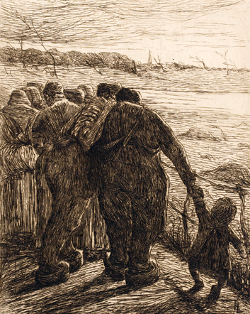

Roger Somville, La belle Bruxelloise, seconde moitié du XXe siècle, pastel sur papier

Pieter De Bloot, Le roi boit, 1633, huile sur bois

Eugène Laermans, Le soir, 1891, eau-forte sur papier

Attribué à Cornelis Metsys, Paysage avec crucifixion, milieu XVIe siècle, huile sur bois
Le patrimoine artistique
Depuis février 2006, à la demande des autorités communales, le MoMuse a pris en charge toute la gestion du patrimoine artistique de la commune.
La première tâche à laquelle le MoMuse s’est consacré a été d’actualiser l’inventaire de cette collection d’œuvres d’art. A cet effet, une historienne de l’art a été engagée pour recenser, inventorier et photographier toutes les œuvres du patrimoine communal.
La collection se compose de tableaux, dont certains datent du XVIe siècle, de lithographies, d’eaux-fortes, de gravures et de sculptures et compte près de 1.000 œuvres qui seront prochainement visibles sur ce site ou tout au moins en partie.
Grâce à cet inventaire, le MoMuse a pu entreprendre une vaste campagne de restauration pour certaines œuvres et d’encadrement pour d’autres. Entamée il y près de cinq ans, elle se poursuit actuellement pour que l’ensemble de ce patrimoine puisse réellement être mis en valeur à l’occasion d’expositions temporaires.
Il faut savoir, en effet, que la majeure partie de ces œuvres n’est pas accessible au public. La plupart d’entre elles ornent les bâtiments communaux, les bureaux du Bourgmestre et des Echevins ainsi que différents services de l’administration. D’autres, pour des raisons de normes de conservation, sont entreposées dans une réserve.
Les expositions temporaires:
Le Musée communal a déjà réalisé plusieurs expositions temporaires.
Ainsi, en 2005 et 2006, le Musée communal a activement participé à la préparation, la mise en place et la réalisation de l’exposition «Molenbeek, récits de ville» organisée par le Musée bruxellois de l’Industrie et du Travail «La Fonderie». L’exposition était présentée en partie au rez-de-chaussée dans la «Salle des Tourneurs» de l’ancienne Compagnie des Bronzes ainsi qu’au premier étage où des témoignages d’habitants de la commune et différentes cartes étaient proposés au public. Cette exposition a été inaugurée au début du mois de février 2006 et s’est prolongée durant plus d’une année.
Durant la même période, le Musée communal a réalisé l’exposition «Vues et Visions de Molenbeek-Saint-Jean». Elaborée à partir d’une petite sélection de l’énorme fonds iconographique que possède le MoMuse, cette exposition a été inaugurée à l’occasion des Journées du Patrimoine 2005. Elle s’est d’abord tenue dans la salle des pas perdus de la Maison communale le 17 et 18 septembre 2005. Ensuite, elle a été installée dans le grand Atrium du Ministère de la Communauté française, Boulevard Léopold II du 29 novembre au 16 décembre 2005. Enfin, à la demande du Secrétaire d’Etat en charge du Patrimoine Emir Kir, elle fut invitée à être exposée aux Halles Saint-Géry du 17 février au 21 avril 2006. Vu son énorme succès, elle fut prolongée jusqu’à la fin du mois de mai 2006. L’équipe du musée a réalisé un catalogue de cette exposition qui est toujours disponible au MoMuse.
En 2007, en étroite collaboration avec la Maison des Cultures et de la Cohésion sociale, la Communauté française, et les Journées du Patrimoine, le Musée communal organisait l’exposition «Trésors cachés». Articulée autour de trois thèmes: le portrait, le paysage et les scènes de la vie quotidienne, elle présentait au public pour la toute première fois une cinquantaine d’œuvres provenant de la collection du patrimoine artistique de la commune. Ainsi ce sont des œuvres datant du XVIe siècle à nos jours qui ont été montrées aux visiteurs. Parmi celles-ci, il faut citer des artistes aussi connus qu’ Antoon Van Dijck, François Clouet, Adriaen Brouwer, Pieter De Bloot, Cornelis Metsys, Nicolas De Largillierre ou encore, plus près de nous, Eugène Laermans, Pierre Paulus de Châtelet, Juliette Wytsman, Roger Somville et Léon Spilliaert. L’exposition a été ouverte au public le 13 septembre 2007 et a connu un franc succès jusqu’à sa clôture le 30 octobre. Comme pour «Vues et Visions de Molenbeek-Saint-Jean», le catalogue de cette exposition est toujours disponible au MoMuse.
Le prêt d’œuvres d’art du patrimoine artistique
Le MoMuse gère également le prêt de certaines œuvres d’art de la collection du patrimoine artistique de Molenbeek-Saint-Jean. L’objectif est bien sûr de mettre en valeur ce patrimoine artistique et de montrer aux visiteurs des œuvres auxquelles ils n’auraient jamais eu accès en d’autres circonstances. En accord avec les autorités communales, des prêts à d’autres institutions nationales ou internationales peuvent être envisagés et réalisés pour des expositions temporaires. Les prêts les plus récents concernaient le Musée d’Ixelles à Bruxelles, le C-Mine à Genk dans le Limbourg, le Musée de Flandre à Cassel en France, ou encore le Musée National d’Art de Roumanie à Bucarest dans le cadre de la Présidence belge du Conseil de l’Union européenne.
Pour plus d’informations, vous pouvez prendre contact avec:
- MoMuse
Michel Van Leeuw, Directeur
2a, Rue Mommaerts
B-1080 Molenbeek-Saint-Jean
00.32.2.414.17.52
info(at)momuse.be
- MoMuse
Petra Vandermeiren, Collaboratrice
2a, Rue Mommaerts
B-1080 Molenbeek-Saint-Jean
00.32.2.414.17.52
info(at)momuse.be
"Crédits photographiques © KIK-IRPA"